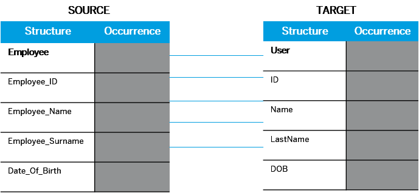

The message mapping step enables you to define an association between fields of messages with different structuring. For example, consider the record Employee and we need to update the employee identification number. In the sender system, the field name is Employee ID. However, in the receiver system, the same field is called ID. Similarly, the figure illustrates how the same fields might have different identifiers in the source and target systems.
You use message mapping like the one above, to define an association between fields in scenarios like this. This enables the HCI system to recognize and update the relevant fields in the target systems.
Each message mapping flow step in an integration flow is associated with a mapping definition resource. You create this definition while adding the mapping step to the integration flow. You can also reuse a definition resource that you have already created in the same integration flow project.